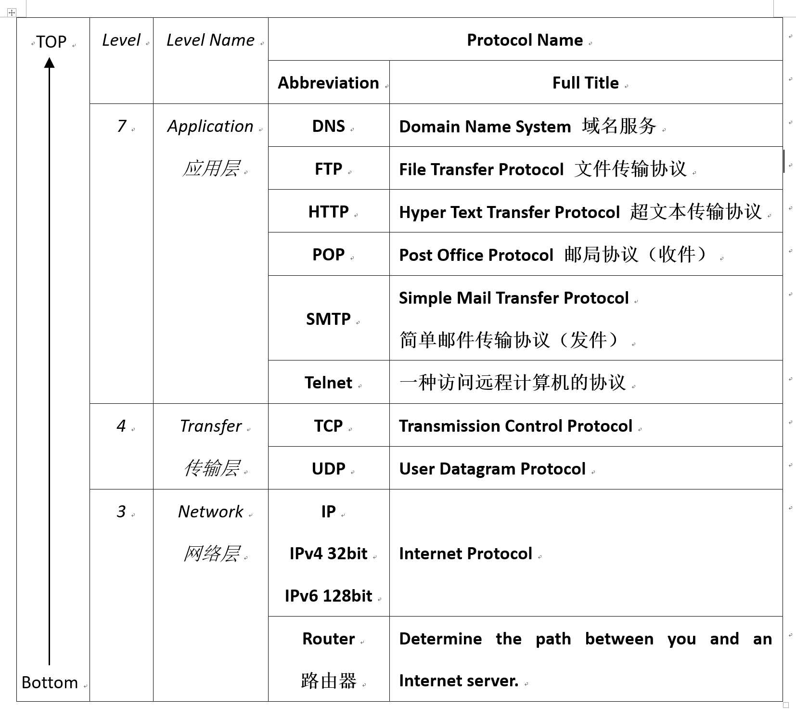

编写：钟钧儒
最后修改日期：2018年5月3日
This is a summary on important concepts showed in the lecture notes, and categorized by the author.
Networks
Network: A collection of computers and devices connected to share information and resources.
Networks by range:
- LAN: Local Area Network
- WAN: Wide Area Network
- The Internet: A network of computer networks worldwide. (two “network”)
- Information Highway, the net, cyberspace
The Internet
- History of the Internet
- 1957: The first artificial satellite by USSR
- 1958: US Department of Defense: the Advance Research Project Agency
- 1969: APRANET
- 1984: APRANET connected 1000+ computers
- 1992: the World Wide Web (WWW) protocol released.
- Nobody owns the Internet, non-profit group Internet Society.
Connectivity
- Connection mechanisms:
- Wired connection:
- Phone modem (调制解调器，猫), up to 64Kbps
- Broadband connection, up to 2-4Mbps
- DSL / ADSL: (Asymmetric) Digital Subscriber Line, (非对称)数位用户线路, Download > Upload
- Cable modem (有线电视调制解调器)
- LAN, with switches (交换机) and routers (路由器)
- Wireless connection:
- Hotspots (热点)
- Wireless adapters (无线网卡): Use by computers
- Wireless routers (无线路由器): Send signal
- Wired connection:
- Internet Services Provider
Who & Where (Addressing)
One major problem in Internet is to find who you are and where you are. In order to solve this problem, the Internet Protocol (IP) was introduced.
- IP Address (IMPORTANT)
- 4*8 = 32bits length
- Composed of network address and host number
- Network address indicates the network this computer locates
- Host number indicates the specific computer in that network
Another problem is that the IP address is hard to be memorized by human. People established a system call Domain Name System (DNS) to covert meaningful names to IP addresses.
- Domain Name System (DNS) (IMPORTANT)
- A hostname consists of domain name and computer name
- e.g.
uic.edu.hkis a domain name, anddst.uic.edu.hkcan be a hostname indicates a computer within the domainuic.edu.hk. - It is a recursive process. It can be said that,
uic.edu.hkis a hostname in domainedu.hk, andedu.hkis a hostname in domain.hk.
- Top-level domain
- The last section of a domain name is the top-level domain to identify the organization that this hostname belongs to.
- A country-based (except US) organization has a two-letter country code.
- A Domain Name Server (DNS) is used to translate the domain name to IP Address.
Client / Server Model
All machines work on the Internet follow the Client / Server model.
Client send requests and server send responses.
Packets & Routers
- Messages are divided into fixed-sized, numbered packets.
- Routers are used to direct these packets, they determine the path between you and an Internet server.
Protocols & Applications
Network protocols are always layered. The layered protocol is referred to as a protocol stack.
Here is a case of layered protocols. Just for your references.

- TCP: Transmission Control Protocol
- Breaks messages into packets, then hands to IP software for delivery.
- Orders and reassembles the packets to messages at destinations.
- IP: Internet Protocol
- Deals with the routing of the packets.